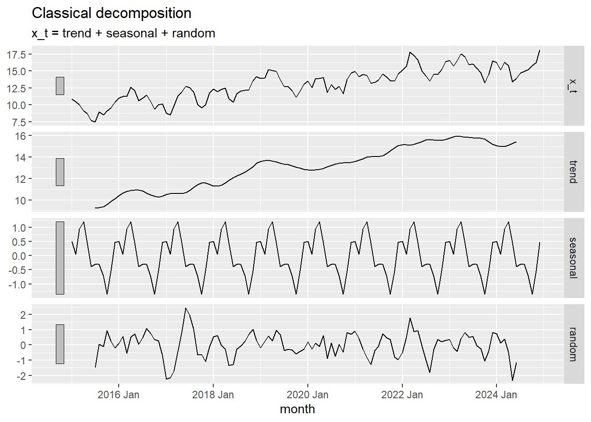
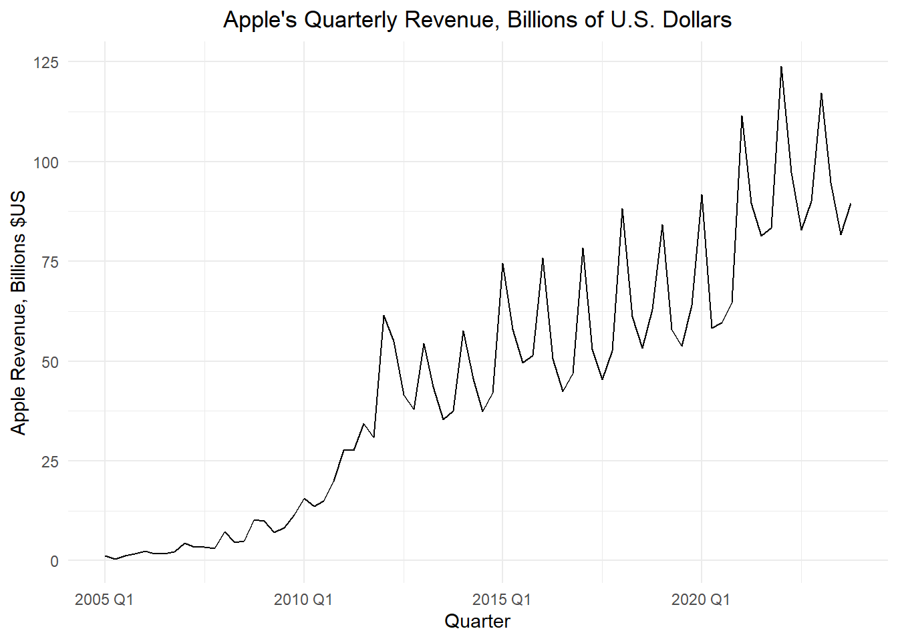

?classical_decompositionMultiplicative Models
Chapter 1: Lesson 5
Learning Outcomes
Decompose time series into trends, seasonal variation, and residuals
- Explain the differences between additive and multiplicative models
- Implement multiplicative decomposition
- Compute the estimators of seasonal variation for a multiplicative model
- Calculate the random component for a multiplicative model
- Compute a seasonally-adjusted time series based on a multiplicative model
Preparation
- Review Sections 1.5.1-1.5.3
Learning Journal Exchange (10 min)
- Review another student’s journal
- What would you add to your learning journal after reading your partner’s?
- What would you recommend your partner add to their learning journal?
- Sign the Learning Journal review sheet for your peer
Class Activity: Comparing Models in the Textbook Versus R (2 min)
Both the textbook and R use the same model in the additive case:
\[ x_t = m_t + s_t + z_t \]
However, there is a discrepancy in the definitions for the mulitplicative models. The textbook defines the multiplicative model as
\[ x_t = m_t \cdot s_t + z_t \] but R defines the multiplicative model as
\[ x_t = m_t \cdot s_t \cdot z_t \] You can investigate R’s definition by executing this command in RStudio.
Class Activity: Exploring Simulated Time Series Data (10 min)
So far, you have learned how to estimate a trend using aggregated data (i.e., an annual average) or a moving average. We will compute the seasonal effect and use this to get the random component.
Additive Model
The code hidden below simulates 10 years of a monthly time series with a linear trend and seasonal variation based on an additive model. Because the data are simulated, we know exactly which functions were used to create it, and we can observe what happens when we decompose this function.
Table 1: Simulated Data (Additive Model)
Show the code
# Set random seed for reproducibility
set.seed(20)
# Set parameters & initialize vectors
num_years <- 10
n <- 12 * num_years
sigma <- .75
a <- 0.05
b <- 1
c <- 0.5
trend <- seasonal <- x_t <- rep(0,n)
time_seq <- seq(1,n)
# Generate correlated error terms
w <- rnorm(n + 4, 0, 1)
z = w + lead(w,1) + lead(w,2) + lead(w,3) + lead(w,4)
z = head(z, n) / 2
# Get date
year_seq <- lubridate::year(today()) - num_years + (time_seq - 1) %/% 12
month_seq <- (time_seq - 1) %% 12 + 1
date_seq <- ymd(paste0(year_seq,"-",month_seq,"-01"))
# Get data
for (t in 1:n) {
trend[t] <- a * t + 10
seasonal[t] <- b * sin(t / 12 * 2 * pi * 1) + c * cos(t / 12 * 2 * pi * 3)
x_t[t] <- trend[t] + seasonal[t] + z[t]
}
x_df <- data.frame(x_t = x_t, trend = trend, seasonal = seasonal)
start_year <- lubridate::year(today()) - num_years
start_date <- lubridate::ymd(paste0(start_year,"-01-01"))
# start_date <- lubridate::ymd("1958-01-01")
date_seq <- seq(start_date,
start_date + months(nrow(x_df)-1),
by = "1 months")
x_df_ts <- x_df |>
mutate(
date = date_seq,
month = tsibble::yearmonth(date)
) |>
select(date, month, trend, seasonal, x_t) |>
as_tsibble(index = month)| Date | Month | Trend, $$m_t$$ | Seasonal, $$s_t$$ | Data, $$x_t$$ |
|---|---|---|---|---|
| 2014-01-01 | 2014 Jan | 10.05 | 0.5 | 10.842 |
| 2014-02-01 | 2014 Feb | 10.1 | 0.366 | 10.461 |
| 2014-03-01 | 2014 Mar | 10.15 | 1 | 9.993 |
| 2014-04-01 | 2014 Apr | 10.2 | 1.366 | 9.082 |
| 2014-05-01 | 2014 May | 10.25 | 0.5 | 8.701 |
| 2014-06-01 | 2014 Jun | 10.3 | -0.5 | 7.697 |
| ⋮ | ⋮ | ⋮ | ⋮ | ⋮ |
| 2023-11-01 | 2023 Nov | 15.95 | -0.5 | 16.264 |
| 2023-12-01 | 2023 Dec | 16 | 0.5 | 18.165 |
The code above has generated simulated data, where the trend is linear with equation
\[ m_t = \frac{t}{20} \]
and the seasonal effect follows the function
\[ s_t = \sin \left( \frac{t\pi}{6} \right) + \frac{1}{2}\cos\left(\frac{t \pi}{18} \right) \]
Letting \(t\) represent the month number across 10 years, we simulate a time series. Click on the tabs below to compare the actual construction of the time series (using the components generated in the code above) to the decomposition in R.
Here is a plot of the components of the simulated data.
Show the code
trend_plot <- ggplot(x_df_ts, aes(x=month, y=trend)) +
geom_line() +
labs(
title="Plot of Trend",
x="Month",
y="Trend"
) +
theme(plot.title = element_text(hjust = 0.5))
seasonal_plot <- ggplot(x_df_ts, aes(x=month, y=seasonal)) +
geom_line() +
labs(
title="Plot of Seasonal Effect",
x="Month",
y="Seasonal"
) +
theme(plot.title = element_text(hjust = 0.5))
error_plot <- ggplot(x_df_ts, aes(x = month, y = x_t - trend - seasonal)) +
geom_line() +
labs(
title="Plot of Random Error Term",
x="Month",
y="Random"
) +
theme(plot.title = element_text(hjust = 0.5))
x_plot <- ggplot(x_df_ts, aes(x=month, y=x_t)) +
geom_line() +
labs(
title="Plot of Simulated Time Series",
x="Month",
y="$$x_t$$"
) +
theme(plot.title = element_text(hjust = 0.5))
x_plot <- x_plot + labs(title = "True (Simulated) Values", x = NULL)
trend_plot <- trend_plot + labs(title = NULL, x = NULL)
seasonal_plot <- seasonal_plot + labs(title = NULL, x = NULL)
error_plot <- error_plot + labs(title = NULL)
x_plot / trend_plot / seasonal_plot / error_plot 
Now, we use R to decompose the time series \(\{x_t\}\).
Show the code
x_decompose <- x_df_ts |>
model(feasts::classical_decomposition(x_t,
type = "add")) |>
components()
autoplot(x_decompose)
Multiplicative Model
We now simulate data and apply R’s multiplicative model. This implies that the error term, \(z_t\), has a mean of 1, rather than 0.
Table 2: Simulated Data (Multiplicative Model)
Show the code
# Set random seed for reproducibility
set.seed(123)
# Set parameters & initialize vectors
num_years <- 10
n <- 12 * num_years
sigma <- .75
a <- 0.03
b <- 1
c <- 0.5
trend <- seasonal <- x_t <- rep(0,n)
time_seq <- seq(1,n)
# Generate correlated error terms
w <- rnorm(n + 4, 0.2, 0.1) # Changed to a mean of 1 and sd of 0.03
z = w + lead(w,1) + lead(w,2) + lead(w,3) + lead(w,4)
z = head(z, n)
# Get date
year_seq <- lubridate::year(today()) - num_years + (time_seq - 1) %/% 12
month_seq <- (time_seq - 1) %% 12 + 1
date_seq <- ymd(paste0(year_seq,"-",month_seq,"-01"))
# Get data
for (t in 1:n) {
trend[t] <- exp(a * t)
seasonal[t] <- exp( b * sin(t / 12 * 2 * pi * 1) + c * cos(t / 12 * 2 * pi * 3) + 1 )
x_t[t] <- trend[t] * seasonal[t] * z[t] # Note R's definition of the mult. model
}
x_df <- data.frame(x_t = x_t, trend = trend, seasonal = seasonal)
start_year <- lubridate::year(today()) - num_years
start_date <- lubridate::ymd(paste0(start_year,"-01-01"))
# start_date <- lubridate::ymd("1958-01-01")
date_seq <- seq(start_date,
start_date + months(nrow(x_df)-1),
by = "1 months")
x_df_ts <- x_df |>
mutate(
date = date_seq,
month = tsibble::yearmonth(date)
) |>
select(date, month, trend, seasonal, x_t) |>
as_tsibble(index = month)| Date | Month | Trend, $$m_t$$ | Seasonal, $$s_t$$ | Data, $$x_t$$ |
|---|---|---|---|---|
| 2014-01-01 | 2014 Jan | 1.03 | 4.482 | 5.065 |
| 2014-02-01 | 2014 Feb | 1.062 | 3.92 | 5.512 |
| 2014-03-01 | 2014 Mar | 1.094 | 7.389 | 11.266 |
| 2014-04-01 | 2014 Apr | 1.127 | 10.655 | 13.348 |
| 2014-05-01 | 2014 May | 1.162 | 4.482 | 5.391 |
| 2014-06-01 | 2014 Jun | 1.197 | 1.649 | 1.93 |
| ⋮ | ⋮ | ⋮ | ⋮ | ⋮ |
| 2023-11-01 | 2023 Nov | 35.517 | 1.649 | 39.853 |
| 2023-12-01 | 2023 Dec | 36.598 | 4.482 | 121.366 |
The code above simulated data, where the trend is exponential with equation
\[ m_t = e^{0.03 t} \]
and the seasonal effect follows the function
\[ s_t = \sin \left( \frac{t\pi}{6} \right) + \frac{1}{2}\cos\left(\frac{t \pi}{18} \right) + 1 \]
Letting \(t\) represent the month number across 10 years, we simulate a time series with multiplicative effects. Click on the tabs below to compare the actual construction of the time series (using the components generated in the code above) to the decomposition in R.
Here is a plot of the components of the simulated data.
Show the code
trend_plot <- ggplot(x_df_ts, aes(x=month, y=trend)) +
geom_line() +
labs(
title="Plot of Trend",
x="Month",
y="Trend"
) +
theme(plot.title = element_text(hjust = 0.5))
seasonal_plot <- ggplot(x_df_ts, aes(x=month, y=seasonal)) +
geom_line() +
labs(
title="Plot of Seasonal Effect",
x="Month",
y="Seasonal"
) +
theme(plot.title = element_text(hjust = 0.5))
error_plot <- ggplot(x_df_ts, aes(x = month, y = x_t / trend / seasonal)) +
geom_line() +
labs(
title="Plot of Random Error Term",
x="Month",
y="Random"
) +
theme(plot.title = element_text(hjust = 0.5))
x_plot <- ggplot(x_df_ts, aes(x=month, y=x_t)) +
geom_line() +
labs(
title="Plot of Simulated Time Series",
x="Month",
y="x_t"
) +
theme(plot.title = element_text(hjust = 0.5))
x_plot <- x_plot + labs(title = "True (Simulated) Values", x = NULL)
trend_plot <- trend_plot + labs(title = NULL, x = NULL)
seasonal_plot <- seasonal_plot + labs(title = NULL, x = NULL)
error_plot <- error_plot + labs(title = NULL)
x_plot / trend_plot / seasonal_plot / error_plot 
Now, we use R to decompose the time series \(\{x_t\}\).
Show the code
x_decompose <- x_df_ts |>
model(feasts::classical_decomposition(x_t,
type = "mult")) |>
components()
autoplot(x_decompose)Which Model Should I Use: Additive or Multiplicative?
Compare the following two time series.

Small Group Activity: Apple’s Quarterly Revenue (30 min)
The code below imports and plots the quarterly revenue for Apple Inc. (in billions of U.S. dollars).
Show the code
apple_ts <- rio::import("https://byuistats.github.io/timeseries/data/apple_revenue.csv") |>
mutate(
dates = mdy(date),
year = lubridate::year(dates),
quarter = lubridate::quarter(dates),
value = revenue_billions
) |>
dplyr::select(dates, year, quarter, value) |>
arrange(dates) |>
mutate(index = tsibble::yearquarter(dates)) |>
as_tsibble(index = index) |>
dplyr::select(index, dates, year, quarter, value) |>
rename(revenue = value) # rename value to emphasize data context
apple_ts |>
autoplot(.vars = revenue) +
labs(
x = "Quarter",
y = "Apple Revenue, Billions $US",
title = "Apple's Quarterly Revenue, Billions of U.S. Dollars"
) +
theme_minimal() +
theme(plot.title = element_text(hjust = 0.5))
We want to find the seasonally adjusted series for a multiplicative model. This is a multi-step process.
Centered Moving Average
First, we compute the centered moving average, \(\hat m_t\).
To emphasize the computation of the centered moving average, the observed data values that were used to find \(\hat m_t\) for the first quarter of 2007 are shown in green in the table below.
Estimated Quarterly Multiplicative Effect
The centered moving average, \(\hat m_t\), is then used to compute the quarterly multiplictive effect, \(\hat s_t\):
\[ \hat s_t = \dfrac{ x_t }{ \hat m_t } \]
Table 3: Computation of the Centered Moving Average, \(\hat m_t\), and the Estimated Quarterly Multiplicative Effect, \(\hat s_t\)
| quarter | Revenue $$x_t$$ | $$ \hat m_t $$ | $$ \hat s_t $$ |
|---|---|---|---|
| 2005 Q1 | 1.24 | NA | ______ |
| 2005 Q2 | 0.48 | NA | ______ |
| 2005 Q3 | 1.24 | 1.315 | ______ |
| 2005 Q4 | 1.71 | ______ | ______ |
| 2006 Q1 | 2.42 | 1.829 | ______ |
| 2006 Q2 | 1.71 | ______ | ______ |
| 2006 Q3 | 1.71 | 2.251 | ______ |
| 2006 Q4 | 2.19 | ______ | 0.808 |
| 2007 Q1 | 4.37 | 3.136 | 1.393 |
| 2007 Q2 | 3.42 | 3.469 | 0.986 |
| 2007 Q3 | 3.42 | 3.956 | 0.864 |
| 2007 Q4 | 3.14 | 4.474 | 0.702 |
| 2008 Q1 | 7.32 | 4.801 | 1.525 |
| 2008 Q2 | 4.61 | 5.87 | 0.785 |
| ⋮ | ⋮ | ⋮ | ⋮ |
| 2022 Q4 | 90.146 | 96.579 | 0.933 |
| 2023 Q1 | 117.154 | 96.128 | 1.219 |
| 2023 Q2 | 94.836 | 95.902 | 0.989 |
| 2023 Q3 | 81.797 | NA | NA |
| 2023 Q4 | 89.498 | NA | NA |
Seasonally Adjusted Factors
Next, we need to compute the mean (across years) of \(\hat s_t\) by quarter. To help us calculate this, it can be convenient to organize the values of \(\hat s_t\) in a table, where the rows give the year and the columns give the quarter.
The overall mean of these means will be reasonably close to, but not exactly one. We adjust these values by dividing the quarterly means by the overall mean.
Table 4: Computation of the Seasonally Adjusted Factors, \(\bar s_t\)
| Year | Q1 | Q2 | Q3 | Q4 |
|---|---|---|---|---|
| 2005 | NA | NA | ______ | ______ |
| 2006 | ______ | ______ | ______ | 0.808 |
| 2007 | 1.393 | 0.986 | 0.864 | 0.702 |
| 2008 | 1.525 | 0.785 | 0.683 | 1.325 |
| 2009 | 1.182 | 0.781 | 0.834 | 1.005 |
| 2010 | 1.193 | 0.912 | 0.849 | 0.963 |
| 2011 | 1.106 | 0.961 | 0.999 | 0.734 |
| 2012 | 1.328 | 1.141 | 0.865 | 0.828 |
| 2013 | 1.249 | 1.019 | 0.819 | 0.856 |
| 2014 | 1.301 | 1.012 | 0.783 | 0.818 |
| 2015 | 1.367 | 1.013 | 0.847 | 0.891 |
| 2016 | 1.355 | 0.928 | 0.781 | 0.855 |
| 2017 | 1.412 | 0.935 | 0.776 | 0.864 |
| 2018 | 1.405 | 0.939 | 0.808 | 0.968 |
| 2019 | 1.303 | 0.894 | 0.816 | 0.956 |
| 2020 | 1.356 | 0.851 | 0.84 | 0.835 |
| 2021 | 1.326 | 1.005 | 0.875 | 0.872 |
| 2022 | 1.282 | 0.995 | 0.849 | 0.933 |
| 2023 | 1.219 | 0.989 | NA | NA |
| Mean | ______ | ______ | ______ | ______ |
| $$ \bar s_t $$ | $$~$$ ______ | $$~$$ ______ | $$~$$ ______ | $$~$$ ______ |
Random Component and the Seasonally Adjusted Time Series
Using R’s definition of the multiplicative model, we calculate the random component by dividing the values in the time series by the product of the trend and the seasonally adjusted factor:
\[ \text{random component} = \dfrac{ x_t }{ \hat m_t \cdot \bar s_t } \]
The seasonally adjusted series is computed by dividing the respective observed values by \(\bar s_t\):
\[ \text{seasonally adjusted series} = \dfrac{ x_t }{ \bar s_t } \]
Use these equations to calculate the values missing from the table below. The adjusted seasonal effect \(\bar s_t\) (s_bar) was computed in the last row of the previous table.
Table 5: Computation of the Random Component and the Seasonally Adjusted Time Series
| Quarter | Revenue $$x_t$$ | $$ \hat m_t $$ | $$ \hat s_t $$ | $$ \bar s_t $$ | Random | Seasonally Adjusted $$x_t$$ |
|---|---|---|---|---|---|---|
| 2005 Q1 | 1.24 | NA | ______ | ______ | ______ | ______ |
| 2005 Q2 | 0.48 | NA | ______ | ______ | ______ | ______ |
| 2005 Q3 | 1.24 | 1.315 | ______ | ______ | ______ | ______ |
| 2005 Q4 | 1.71 | 1.616 | ______ | ______ | ______ | ______ |
| 2006 Q1 | 2.42 | 1.829 | ______ | ______ | ______ | ______ |
| 2006 Q2 | 1.71 | 1.947 | ______ | ______ | ______ | ______ |
| 2006 Q3 | 1.71 | 2.251 | ______ | ______ | ______ | ______ |
| 2006 Q4 | 2.19 | 2.709 | 0.808 | 0.905 | 0.893 | 2.42 |
| 2007 Q1 | 4.37 | 3.136 | 1.393 | 1.314 | 1.06 | 3.325 |
| 2007 Q2 | 3.42 | 3.469 | 0.986 | 0.947 | 1.041 | 3.612 |
| ⋮ | ⋮ | ⋮ | ⋮ | ⋮ | ⋮ | ⋮ |
Class Activity: Computing the Multiplicative Decomposition in R (3 min)
The R code below calculates the decomposition, including the seasonally adjusted time series, beginning with the tsibble apple_ts.
Table 6: First Few Rows of the Decomposition of the Apple Revenue Time Series
Show the code
apple_decompose <- apple_ts |>
model(feasts::classical_decomposition(revenue,
type = "mult")) |>
components()
apple_decompose |>
head(8) |>
display_table()| .model | index | revenue | trend | seasonal | random | season_adjust |
|---|---|---|---|---|---|---|
| feasts::classical_decomposition(revenue, type = "mult") | 2005 Q1 | 1.24 | NA | 1.3141184 | NA | 0.9435984 |
| feasts::classical_decomposition(revenue, type = "mult") | 2005 Q2 | 0.48 | NA | 0.9469622 | NA | 0.5068840 |
| feasts::classical_decomposition(revenue, type = "mult") | 2005 Q3 | 1.24 | 1.31500 | 0.8337749 | 1.1309596 | 1.4872119 |
| feasts::classical_decomposition(revenue, type = "mult") | 2005 Q4 | 1.71 | 1.61625 | 0.9051445 | 1.1688792 | 1.8892010 |
| feasts::classical_decomposition(revenue, type = "mult") | 2006 Q1 | 2.42 | 1.82875 | 1.3141184 | 1.0069932 | 1.8415388 |
| feasts::classical_decomposition(revenue, type = "mult") | 2006 Q2 | 1.71 | 1.94750 | 0.9469622 | 0.9272269 | 1.8057743 |
| feasts::classical_decomposition(revenue, type = "mult") | 2006 Q3 | 1.71 | 2.25125 | 0.8337749 | 0.9110109 | 2.0509132 |
| feasts::classical_decomposition(revenue, type = "mult") | 2006 Q4 | 2.19 | 2.70875 | 0.9051445 | 0.8932176 | 2.4195031 |
Show the code
autoplot(apple_decompose)The figure below illustrates the original time series (in black), the centered moving average \(\hat m_t\) (in blue), and the seasonally adjusted series (in red).
Show the code
apple_decompose |>
ggplot() +
geom_line(data = apple_decompose, aes(x = index, y = revenue), color = "black") +
geom_line(data = apple_decompose, aes(x = index, y = season_adjust), color = "#D55E00") +
geom_line(data = apple_decompose, aes(x = index, y = trend), color = "#0072B2") +
labs(
x = "Quarter",
y = "Quarterly Revenue, Billions",
title = "Apple Inc. Quarterly Revenue (in Billions of U.S. Dollars)"
) +
theme(plot.title = element_text(hjust = 0.5))Homework Preview (5 min)
- Review upcoming homework assignment
- Clarify questions